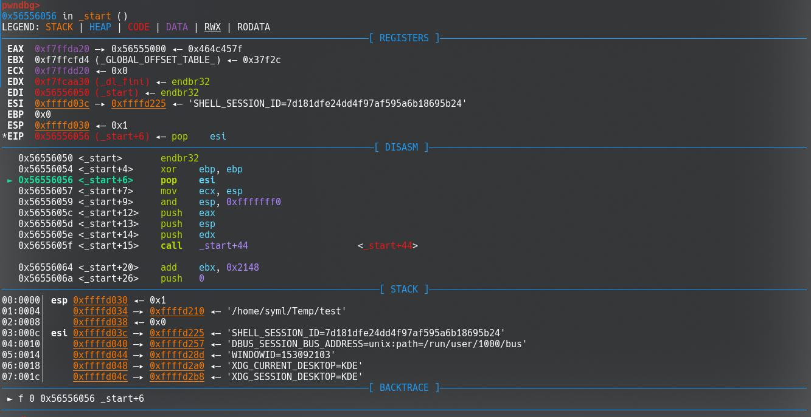
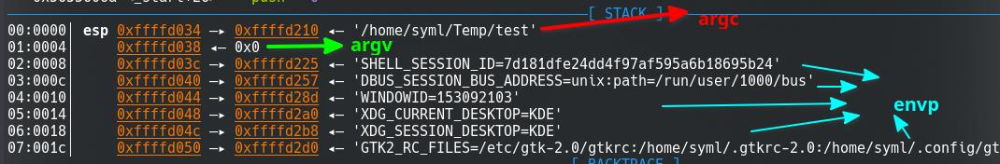
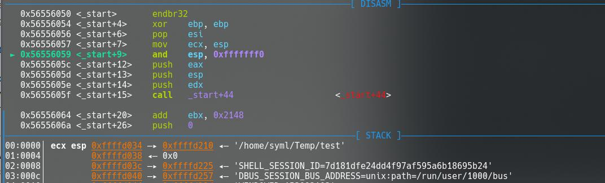
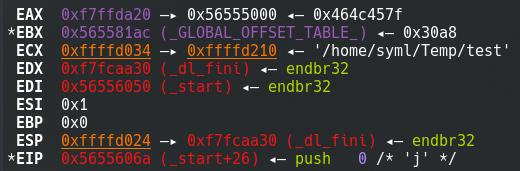
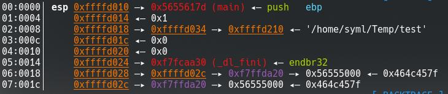

之前偶尔写一些逆向的时候总会看到 IDA 反汇编出来的函数列表里面有 _start 这样的奇奇怪怪的函数，在调试的时候 main 函数 return 之后也会到一些奇奇怪怪的地方去。感觉是应该去把这些东西给理一下了。
# 程序的启动和 execve
我们在 shell 中执行一个程序的时候，Linux 内核会去装载这个程序并且去执行。
按照以前所学的 shell 的实现，当在终端中输入了一条命令之后，shell 会进行 fork() 调用创建一个新的进程，并在新的进程中执行这条命令。
void run_command(char* command, char* args[], int args_cnt){ | |
//background 指定命令是否在后台运行 | |
int background = 0; | |
if (strcmp(args[args_cnt - 1], "&") == 0){ | |
// 以 & amp; 参数结尾的命令，在后台中运行 | |
args[args_cnt - 1] = NULL; | |
background = 1; | |
} | |
if (run_inner_command(command, args)){ // 排除掉 shell 的内置指令 | |
//shell 会 fork 一个新的进程 | |
pid_t pid = fork(); | |
if (pid < 0){ | |
//fork 失败，报错 | |
printf("Unable to fork child process!\n"); | |
} | |
else | |
// 既然 pid 是 0，说明是子进程 | |
if (pid == 0){ | |
fflush(stdout); | |
// 调用 execvp 去执行命令，这个 execvp 下面再说 | |
if (execvp(command, args) == -1) | |
// 返回值 - 1 说明执行失败 | |
printf("Error when executing command %s\n", command); | |
// 结束子进程的执行 | |
exit(0); | |
} | |
else { | |
//pid 不是 0，是父进程 | |
if (!background) | |
// 如果命令不是后台执行那么就得等待子进程结束了 | |
waitpid(pid, NULL, 0); | |
else { | |
fflush(stdout); | |
} | |
} | |
} | |
} |
前面提到了 execvp(const char* file, char* const argv[]) ，这个函数定义在 unistd.h 中。这个头文件中还定义了其他的一系列函数：
int execl(const char *path, const char *arg, ...); | |
int execlp(const char *file, const char *arg, ...); | |
int execle(const char *path, const char *arg, ..., char * const envp[]); | |
int execv(const char *path, char *const argv[]); | |
int execvp(const char *file, char *const argv[]); | |
int execvpe(const char *file, char *const argv[], char *const envp[]); |
应该说这些函数实际上都是通过调用 execve 来实现的。这些函数定义在 glibc 中，通过一个系统调用来实现。
glibc 中的 execve 产生的系统调用会被 Linux 内核接收并处理，Linux 内核会读取对应的文件并装载入内存进行执行。内核中对这个过程的实现包括了一系列的函数，在这里就不多说了。
# 入口点和 _start
我们写一个简单的程序。
int main(){ | |
} |
这仅仅是一个空的函数体，只能勉强称之为 “程序”。编译之后，通过 readelf 读取文件头信息：
ELF 头：
Magic： 7f 45 4c 46 01 01 01 00 00 00 00 00 00 00 00 00
类别: ELF32
数据: 2 补码，小端序 (little endian)
Version: 1 (current)
OS/ABI: UNIX - System V
ABI 版本: 0
类型: DYN (Position-Independent Executable file)
系统架构: Intel 80386
版本: 0x1
入口点地址： 0x1050
程序头起点： 52 (bytes into file)
Start of section headers: 14180 (bytes into file)
标志： 0x0
Size of this header: 52 (bytes)
Size of program headers: 32 (bytes)
Number of program headers: 12
Size of section headers: 40 (bytes)
Number of section headers: 36
Section header string table index: 35
可以看到程序的入口点是 0x1050 。我们通过 objdump 反汇编查看对应的入口点：
00001050 <_start>:
1050: f3 0f 1e fb endbr32
1054: 31 ed xor ebp,ebp
1056: 5e pop esi
1057: 89 e1 mov ecx,esp
1059: 83 e4 f0 and esp,0xfffffff0
105c: 50 push eax
105d: 54 push esp
105e: 52 push edx
105f: e8 18 00 00 00 call 107c <_start+0x2c>
1064: 81 c3 9c 2f 00 00 add ebx,0x2f9c
106a: 6a 00 push 0x0
106c: 6a 00 push 0x0
106e: 51 push ecx
106f: 56 push esi
1070: ff b3 f8 ff ff ff push DWORD PTR [ebx-0x8]
1076: e8 c5 ff ff ff call 1040 <__libc_start_main@plt>
107b: f4 hlt
107c: 8b 1c 24 mov ebx,DWORD PTR [esp]
107f: c3 ret
和常识并不相符 —— 程序的入口点实际上对应的是这个 _start 函数，而不是 main 函数。
如果用 GDB 进行调试，实际上程序在最开始会从 _start 跳转进入 _dl_start 函数进行操作，这个函数是 glibc 中的一个函数，Linux 系统中在执行 execve （实际上是 do_execveat_common ）时调用它，主要是用来进行动态链接。在程序执行结束之后，也有一个类似的函数用来解除动态链接。
最开始的 endbr32 （或者 endbr64 ）指令的作用是用作跳转的目的地址，跳转的目的地址位置上的指令是 endbr32 说明这是这个跳转有效，这个指令此外并没有作用。
首先这里执行了 xor ebp, ebp ，将 ebp 的值置为 0。接下来， pop esi 指令将栈顶的数据弹出到 esi 中。

图片是在执行 pop esi 的上一步操作，此时 esi 的值是之前 dl_start 调用留下的，指向栈上的一个位置。而 EBP 的值已经被设置为了 0x0。
在执行完 pop esi 之后，我们观察程序的栈：

先前在栈顶的位置上是 argc （0x1），被弹出之后，现在剩下 argv 和 envp 。
mov ecx, esp 将 esp 的值放入 ecx 中，也就是将 ecx 指向目前栈顶的位置，这个位置存放的实际上就是 argv 。

接下来的操作 and esp, 0xfffffff0 将 esp 的最低 4 位置为了 0。这一步显然会让栈顶向上移动，但是移动的距离是不固定的，取决于执行这条命令之前栈顶的位置。这样操作的目的在于将栈顶和 4 字节对齐。
接下来的一段代码是这些：
push eax
push esp
push edx
call _start+0x2c
在执行 call _start+0x2c 之前，程序的寄存器和栈分别是：
EAX 0xf7ffda20 —▸ 0x56555000 ◂— 0x464c457f
EBX 0xf7ffcfd4 (_GLOBAL_OFFSET_TABLE_) ◂— 0x37f2c
ECX 0xffffd034 —▸ 0xffffd210 ◂— '/home/syml/Temp/test'
EDX 0xf7fcaa30 (_dl_fini) ◂— endbr32
EDI 0x56556050 (_start) ◂— endbr32
ESI 0x1
EBP 0x0
*ESP 0xffffd024 —▸ 0xf7fcaa30 (_dl_fini) ◂— endbr32
*EIP 0x5655605f (_start+15) ◂— call 0x5655607c
----------------------------------------------------------------
00:0000│ esp 0xffffd024 —▸ 0xf7fcaa30 (_dl_fini) ◂— endbr32
01:0004│ 0xffffd028 —▸ 0xffffd02c —▸ 0xf7ffda20 —▸ 0x56555000 ◂— 0x464c457f
02:0008│ 0xffffd02c —▸ 0xf7ffda20 —▸ 0x56555000 ◂— 0x464c457f
03:000c│ 0xffffd030 ◂— 0x1
04:0010│ ecx 0xffffd034 —▸ 0xffffd210 ◂— '/home/syml/Temp/test'
05:0014│ 0xffffd038 ◂— 0x0
06:0018│ 0xffffd03c —▸ 0xffffd225 ◂— 'SHELL_SESSION_ID=7d181dfe24dd4f97af595a6b18695b24'
07:001c│ 0xffffd040 —▸ 0xffffd257 ◂— 'DBUS_SESSION_BUS_ADDRESS=unix:path=/run/user/1000/bus'
这一段代码接下来跳转到下面的部分：
mov ebx, dword ptr [esp]
ret
第一条指令将栈顶的数据放入 ebx 中。经过上一步的 call 指令操作，栈顶现在的值为 call 的指令返回地址，也就是 call 的下一条指令所在的地方。
接下来执行 ret ，程序返回 esp 所指位置的值对应的地址，也就是 call 下一条指令的位置。（将栈顶的元素弹出到 eip ）
下面的指令是 add ebx, 0x2148 。
在执行之后，各个寄存器的值：

在这个时候， ebx 指向了 _GLOBAL_OFFSET_TABLE_ 。
接下来的指令序列分别是：
push 0
push 0
push ecx ; argc
push esi
push dword ptr [ebx - 8] ;
call __libc_start_main@plt
执行完前面的 push 指令序列之后，栈上的情况是：

这里 dword ptr [ebx - 8] 指针实际对应的位置就是 main 函数的入口点。
查看 __libc_start_main 的定义：
int __libc_start_main( | |
int (*main) (int, char * *, char * *), | |
int argc, | |
char * * ubp_av, // argv | |
void (*init) (void), | |
void (*fini) (void), | |
void (*rtld_fini) (void), | |
void (* stack_end) | |
); |
我们可以将参数和栈上的数据进行对应：
| 参数 | 作用 | 栈上位置 | 值 |
|---|---|---|---|
int (*main)(int, char**, char**) | 程序的 main 函数 | ESP | 0x5655617d (main) |
int argc | 参数 argv 的个数 | ESP+4 | 0x1 |
char** ubp_av | 参数 argv | ESP+8 | 0xffffd034->0xffffd210 |
void (*init)(void) | _libc_csu_init 函数 | ESP+C | NULL(0) |
void (*fini)(void) | _libc_csu_fini 函数 | ESP+10 | NULL(0) |
void (*rtld_fini)(void) | 动态链接器的析构函数 | ESP+14 | 0xf7fcaa30(_dl_fini) |
void (*stack_end) | 栈指针 | ESP+18 | 原 ESP 值 |
下面执行调用，程序进入 __libc_start_main 中。注意这里跳转到的实际上是 plt 表中对应的表项，这是一个到内存中的索引。实际上还需要另外一次跳转。
# __libc_start_main
当程序进入了 glibc 的代码部分之后，常规人类的思维就逐渐难以跟上了。
函数 __libc_start_main 实际在 glibc 下的源码 csu/libc-start.c 中，对应了函数：
STATIC int LIBC_START_MAIN(int (*main)(int, char **, char **MAIN_AUXVEC_DECL), | |
int argc, char **argv, | |
#ifdef LIBC_START_MAIN_AUXVEC_ARG | |
ElfW(auxv_t) * auxvec, | |
#endif | |
__typeof(main) init, void (*fini)(void), | |
void (*rtld_fini)(void), void *stack_end) | |
__attribute__((noreturn)); |
这里的具体内容暂且不说，里面做了包括了这样几件事情：
重定位，PIE
_dl_relocate_static_pie(); |
canary
/* Set up the pointer guard value. */ | |
uintptr_t pointer_chk_guard = | |
_dl_setup_pointer_guard(_dl_random, stack_chk_guard); |
调用了 init ：
/* Call the initializer of the program, if any. */ | |
#ifdef SHARED | |
if (__builtin_expect(GLRO(dl_debug_mask) & DL_DEBUG_IMPCALLS, 0)) | |
GLRO(dl_debug_printf)("\ninitialize program: %s\n\n", argv[0]); | |
#endif | |
if (init) | |
(*init)(argc, argv, __environ MAIN_AUXVEC_PARAM); |
调用主函数，同时将参数传递进去：
char **ev = &argv[argc + 1]; | |
...... | |
/* Nothing fancy, just call the function. */ | |
result = main(argc, argv, __environ MAIN_AUXVEC_PARAM); |
处理最终的结果：
exit(result); |
# __libc_csu_init
在许多情况下， init 指向的是 glibc 的 __libc_csu_init 函数，这个函数定义在了 csu/elf-init.c 中。
void | |
__libc_csu_init (int argc, char **argv, char **envp) | |
{ | |
/* For dynamically linked executables the preinit array is executed by | |
the dynamic linker (before initializing any shared object). */ | |
#ifndef LIBC_NONSHARED | |
/* For static executables, preinit happens right before init. */ | |
{ | |
const size_t size = __preinit_array_end - __preinit_array_start; | |
size_t i; | |
for (i = 0; i < size; i++) | |
(*__preinit_array_start [i]) (argc, argv, envp); | |
} | |
#endif | |
#ifndef NO_INITFINI | |
_init (); | |
#endif | |
const size_t size = __init_array_end - __init_array_start; | |
for (size_t i = 0; i < size; i++) | |
(*__init_array_start [i]) (argc, argv, envp); | |
} |
去除掉其中暂时用不着的宏定义部分，这个函数做的是这些：
_init(); | |
const size_t size = __init_array_end - __init_array_start; | |
for (size_t i = 0; i < size; i++) | |
(*__init_array_start [i]) (argc, argv, envp); |
这个函数实际上是整个程序的 “构造函数”。首先它调用了函数 _init() 。
/* These function symbols are provided for the .init/.fini section entry | |
points automagically by the linker. */ | |
extern void _init (void); | |
extern void _fini (void); |
# _init
这边并没有给出定义，只有一个简单的声明。我们对程序进行反汇编来看看 _init() 到底做了什么。
00001000 <_init>:
1000: f3 0f 1e fb endbr32
1004: 53 push ebx
1005: 83 ec 08 sub esp,0x8
1008: e8 73 00 00 00 call 1080 <__x86.get_pc_thunk.bx>
100d: 81 c3 9f 21 00 00 add ebx,0x219f
1013: 8b 83 f4 ff ff ff mov eax,DWORD PTR [ebx-0xc]
1019: 85 c0 test eax,eax
101b: 74 02 je 101f <_init+0x1f>
101d: ff d0 call eax
101f: 83 c4 08 add esp,0x8
1022: 5b pop ebx
1023: c3 ret
get_pc_thunk 这个函数是用来处理 Global Offset Table （GOT 表），这和地址无关代码有关。这个函数可以获取当前指令的位置，这样加上一个偏移就可以访问一些资源。
00001080 <__x86.get_pc_thunk.bx>:
1080: 8b 1c 24 mov ebx,DWORD PTR [esp]
1083: c3 ret
1084: 66 90 xchg ax,ax ; 在x86中对应nop
1086: 66 90 xchg ax,ax
1088: 66 90 xchg ax,ax
108a: 66 90 xchg ax,ax
108c: 66 90 xchg ax,ax
108e: 66 90 xchg ax,ax
这里有趣的是，在执行调用语句 call <__x86.get_pc_thunk.bx> 的时候，栈顶被压入了下一条指令也就是 add ebx,0x219f 的地址。而这个时候 mov ebx,DWORD PTR [esp] 实际上放入 ebx 的也就是这条指令的地址。
接下来执行的 add 语句中 0x219f 就是当前代码相较于位置无关代码的偏移。接下来就是将对应地址中的数据读取到寄存器 eax 中，如果对应的地址有效那么便去执行其中的代码 ( gmon_start / frame_dummy 之类的？)，否则继续也就是结束这个函数的执行。
我看有些教程里面提到了有函数
_do_global_ctors_aux，但是我没有在这里找到从_init开始的调用。头疼……
# _do_global_ctors_aux
这个函数理论上使用来执行构造函数的，也就是 “存放了全局 C++ 对象的构造函数”。
不过麻烦的是程序编译了之后好像没有这个东西……
要是啥时候知道了再补上……
在执行了上面的部分之后（？）， _init 函数也就到了最后结尾，接下来程序返回到 __libc_start_main 中。
# 回到 __libc_csu_init
接下来，我们执行到了这个代码段：
const size_t size = __init_array_end - __init_array_start; | |
for (size_t i = 0; i < size; i++) | |
(*__init_array_start [i]) (argc, argv, envp); |
这一段也就是在执行一系列的初始化函数：
// test init | |
#include <stdio.h> | |
int main(){ | |
printf("%s\n", __FUNCTION__); | |
} | |
void init(int argc, char **argv, char **envp){ | |
printf("%s\n", __FUNCTION__); | |
} | |
__attribute__((section(".init_array"))) typeof(init) *__init = init; |
程序执行的结果也就是这样的：
# syml @ SYMLArch in ~/Temp 0 [18:57:21] | |
$ ./test | |
init | |
main |
在执行结束这一系列的初始化函数之后， __libc_csu_init 函数结束。接下来程序返回到 __libc_start_main 中，并接着进入 main 函数，在执行完成之后，结果会返回给 exit 函数进行处理。
# 总结
最后那这张网上的图来说明一下整个流程，一个程序运行的流程也就是把这棵树先序遍历了一下：

总的来看整个流程至少是梳理了一遍…… 但是说实话不少地方还是有点痛苦的，比如说 glibc 的源码实在是太晦涩了，包括部分函数实际上是自动生成的，并没有对应的源码能够查阅。
这一篇写下来填了一些之前留下的坑，又留了更多的坑……
# 参考资料
[1] 程序员的自我修养 —— 链接、装载与库
[2] http://dbp-consulting.com/tutorials/debugging/linuxProgramStartup.html
[3] 深入理解 Linux 内核
[4] glibc 源码
[5] Linux 源码